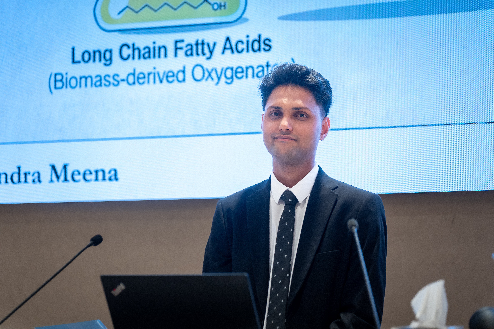

Raghavendra Meena
A computational materials scientist exploring the frontiers of sustainable catalysis (of biomass) through density functional theory (DFT), ab initio molecular dynamics (AIMD), microkinetic modeling (MKM), metadynamics, and machine learning techniques at Wageningen University & Research.

Biography
Raghavendra Meena completed a BS-MS degree (2015–2020) in Chemistry & Physics from IISER Pune, India, including a full year Master’s thesis under Prof. Michele Casula at Sorbonne Université, France. While pursuing BS-MS Dual Degree at IISER Pune, he did additional research internships within Computational Chemistry domain with Prof. Prasenjit Ghosh at IISER Pune (2018-2019), Prof. Eluvathingal D. Jemmis at IISc Bangalore (2018), Amlan K. Roy at IISER Kolkata (2017), and Prof. Manikandan Paranjothy at IIT Jodhpur (2016). He was awarded the National Talent Search Examination Scholarship by the Government of India (2013–2015) and subsequently the INSPIRE Scholarship by the Department of Science and Technology (2015–2020), both recognizing academic merit at the national level. An Erasmus+ Fellowship supported his time in France. In October 2020, he joined as a joint PhD candidate between the Biobased Chemistry and Technology group and the Laboratory of Organic Chemistry at Wageningen University, under the supervision of Prof. Harry Bitter, Prof. Han Zuilhof, and Dr. Guanna Li. His PhD research, titled “Multiscale Modeling of Molybdenum and Tungsten Carbide Catalysts for Sustainable Biomass Conversion”, broadly applies computational materials science and theoretical chemistry to sustainable catalysis, biomass conversion, plastic waste upcycling, and electrochemical transformations. Outside of research, he enjoys football, chess, photography, building trading algorithms, and learning musical instruments.
Let's Connect
Interested in collaboration, research discussions, or just want to say hello? I'd love to hear from you.
raghavendra.ip2020@gmail.com